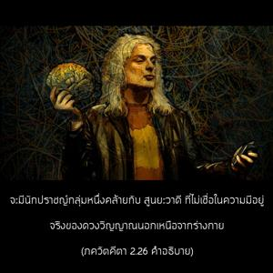
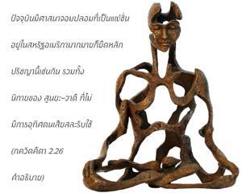
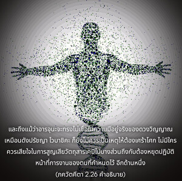
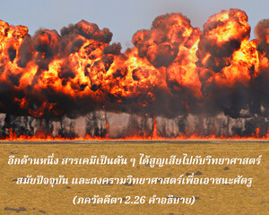
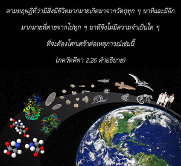

อย่างไรก็ดี ถ้าหากเธอคิดว่าดวงวิญญาณ (หรือลักษณะอาการของชีวิต) มีการเกิดและตายชั่วนิรันดร เธอก็ไม่มีเหตุผลที่จะต้องโศกเศร้า โอ้ ยอดนักรบ





มักจะมีนักปราชญ์กลุ่มหนึ่งคล้ายกับ ศูนฺยวาทิ ที่ไม่เชื่อในความมีอยู่จริงของดวงวิญญาณนอกเหนือจากร่างกาย เมื่อองค์ศฺรีกฺฤษฺณตรัส ภควัท-คีตา ปรากฏว่ามีนักปราชญ์กลุ่มที่ชื่อ โลกายติก และ ไวภาษิก นักปราชญ์เหล่านี้เชื่อว่าลักษณะอาการของชีวิตเกิดขึ้นภายใต้สภาวะอันสมบูรณ์เต็มที่จากการผสมผสานทางวัตถุ นักวิทยาศาสตร์ทางวัตถุสมัยปัจจุบันและนักปราชญ์ทางวัตถุก็มีแนวคิดเช่นเดียวกันตามความเชื่อที่ว่า ร่างกาย คือ การผสมผสานของธาตุวัตถุ และเมื่อมาถึงจุดๆ หนึ่งลักษณะอาการของชีวิตจะเกิดขึ้น เนื่องมาจากการผสมผสานของธาตุวัตถุและสารเคมี ศาสตร์แห่งมนุษยวิทยาก็มีแนวคิดพื้นฐานมาจากปรัชญานี้ ปัจจุบันมีศาสนาจอมปลอมที่เป็นแฟชั่นอยู่ในสหรัฐอเมริกามากมายก็ยึดหลักปรัชญานี้เช่นกัน รวมทั้งนิกายของ ศูนฺยวาทิ ที่ไม่มีการอุทิศตนเสียสละรับใช้
และถึงแม้ว่า อรฺชุน จะทรงไม่เชื่อในความมีอยู่จริงของดวงวิญญาณเหมือนดังปรัชญา ไวภาษิก ก็ยังไม่ควรเป็นเหตุให้ต้องเศร้าโศก ไม่มีใครควรเสียใจในการสูญเสียสารเคมีวัตถุไปบางส่วน จนถึงกับต้องหยุดปฏิบัติหน้าที่การงานของตนที่กำหนดไว้ อีกด้านหนึ่ง สารเคมีเป็นตันๆ ได้สูญเสียไปกับวิทยาศาสตร์สมัยปัจจุบัน และสงครามวิทยาศาสตร์เพื่อเอาชนะศัตรู ตามปรัชญา ไวภาษิก สิ่งที่เรียกว่าดวงวิญญาณหรือ อาตฺมา จะสูญสลายไปพร้อมกับการเสื่อมโทรมของร่างกาย ฉะนั้น ไม่ว่าจะพิจารณาในกรณีใด อรฺชุน จะทรงยอมรับข้อสรุปของพระเวทว่ามีดวงวิญญาณจริง หรือไม่เชื่อว่าดวงวิญญาณมีอยู่จริง พระองค์ก็ทรงไม่มีเหตุผลที่จะต้องเศร้าโศก จากทฤษฎีนี้ที่ว่าทุกๆ นาทีจะมีสิ่งมีชีวิตเกิดจากวัตถุมากมาย และก็ตายจากไปทุกๆ นาทีจึงไม่มีความจำเป็นใดๆ ที่จะต้องโศกเศร้าต่อเหตุการณ์เช่นนี้ หากดวงวิญญาณไม่มีการเกิดอีก อรฺชุน ก็ทรงไม่มีเหตุผลต้องกลัวผลบาปอันเนื่องมาจากการสังหารพระอัยกาและพระอาจารย์ แต่ในขณะเดียวกันองค์กฺฤษฺณทรงตรัสกระทบด้วยการเรียก อรฺชุน ว่า มหา-พาหุ ยอดนักรบเพราะว่าอย่างน้อยก็ทรงไม่ยอมรับทฤษฎีของไวภาษิก ซึ่งทฤฎีนั้นจะปฏิเสธปรัชญาพระเวท ในฐานะที่เป็น กฺษตฺริย อรฺชุน ทรงอยู่ในวัฒนธรรมพระเวทจึงจำเป็นต้องปฏิบัติตามหลักธรรมนั้นต่อไป